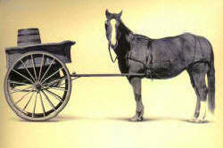

The present perfect

The distinction in English between the simple and perfect forms of
all tenses is the key to understanding how English conceptualises time.
If you haven't followed the
introductory guide to English tenses yet, please consider doing so
now.
 |
languages differ |
Many languages have verbs forms selected to represent the speaker's
view of time – that is what tenses do. However, they differ
in terms of what they see as the important distinctions.
Some languages, such as
Mandarin, have no changes to verbs to signify time at all, relying on
adverbials, particles and the context to signal time concepts. It
is perfectly possible to be understood (at least on a basic level) and
use no tense forms at all. So:
I go tomorrow
I come yesterday
I always do this
I arrive recently
I finish work at 6 last week
are all perfectly comprehensible even if they need a little
interpretation from the listener.
Briefly, many languages do not distinguish between the present
perfect and the simple past in the way that English does although they
may have very similar forms. (German, for example, can form a
sentence like Ich habe es gemacht
(roughly translatable as I have done it)
but this does not necessarily signify present relevance and could be translated as
I did it.)
 |
forms |
The simple form of the present perfect is not too difficult to grasp or to teach. It works like this:
| Form | Examples | ||||
| Affirmative | subject | + auxiliary | + main verb (past participle) | [+ object if needed] | She has broken the glass Mary has asked him |
| noun / pronoun | have / has | broken, smoked, came etc. | noun / pronoun | ||
| Negative | subject | + negative auxiliary | + main verb (past participle) | [+ object if needed] | I haven't been to London The weather hasn't been warm |
| noun / pronoun | have not / has not | broken, smoked, came etc. | noun / pronoun | ||
| Interrogatives | auxiliary | + subject | + main verb (past participle) | [+ object if needed] | Have you seen my wallet? Has the pub opened? |
| have / has | noun / pronoun | broken, smoked, came etc. | noun / pronoun | ||
| negative auxiliary | subject | + main verb (past participle) | [+ object if needed] | Haven't you finished it? Hasn't the weather been lovely? |
|
| have not / has not | noun / pronoun | broken, smoked, came etc. | noun / pronoun | ||
The continuous or progressive form of the present perfect is slightly more complex. It works like this:
| Form | Examples | |||||
| Affirmative | subject | + auxiliary | + been | + main verb (-ing form) | [+ object if needed] | She has been mending the glass Mary has been asking him |
| noun / pronoun | have / has | breaking, smoking, coming etc. | noun / pronoun | |||
| Negative | subject | + negative auxiliary | + main verb (-ing form) | [+ object if needed] | I haven't been
travelling to London Hasn't been raining |
|
| noun / pronoun | have not / has not | breaking, smoking, coming etc. | noun / pronoun | |||
| Interrogatives | auxiliary | + subject | + main verb (-ing form) | [+ object if needed] | Have you been running? Has the pipe been leaking? |
|
| have / has | noun / pronoun | breaking, smoking, coming etc. | noun / pronoun | |||
| negative auxiliary | subject | + main verb (-ing form) | [+ object if needed] | Haven't you been
working hard? Hasn't the rain been falling heavily? |
||
| have not / has not | noun / pronoun | breaking, smoking, coming etc. | noun / pronoun | |||
It is not the form of the tense that is difficult to learn. It is the concept that is harder to grasp.
 |
conceptualising time |
The present perfect is a relative tense. We
use it to consider one state, event or action in relation to another.
Fundamentally, the tense is a present tense, not a past
tense, because it refers to the present in relation to the past.
This is what is meant:
| Example | Concept and meaning |
| I have spent all my money | Spending money is clearly in the past but the reference is to having no money now. |
| He hasn't finished yet | The fact is important to now because he must continue to work. |
| He has been running and is all sweaty | The running was a progressive action in the past but mentioning it explains the present. |
| I haven't been paying attention, I'm afraid | My lack of attention is a continuous state in the past but it explains why I do not understand now. |
| Have you seen the paper? | I am referring to up to now because I want the paper now. |
One way to understand the concept the present perfect in
English indicates is to contrast it with the past simple.
The past simple is an absolute tense, not a relative one, and refers to
a finished event or action which may or may not have any relation to the
present. For example:
| Example | Concept and meaning |
| I spent all my money | This just refers to something finished. It does not necessarily imply anything about the present. |
| He finished at six | Compare this to the use above with yet. The time expression at six clearly fixes the event in time but yet is open ended. This does not mean that the time expression controls tense use. It is the other way around: the tense meaning permits some time references and not others. |
| He ran for the bus. | The running was a progressive action in the past but says nothing about the present. |
| I didn't pay attention, I'm afraid | There's no reason why this matters at all now. It explains nothing. |
| Did you see the paper? | I am interested in what you saw, not where the paper is now. |
 |
 |
Now, as a test, can you complete this table? Click on the table when you have filled in all the blank cells in your head. |
Compare these examples and see if you can figure out whether:
- the action took place at a particular point in time
- the action continued over a period of time
- the action continued up to the present
- the action has some obvious present significance
Fill in the grid (you can tick one or more boxes). You can do this in your head or on paper. Click on the table when you have an answer.

Notes:
- (Past simple) You may have decided that she smoked a cigarette is an action that takes a period of time. That's OK but the action is seen as taking place at a particular moment in time. It tells us nothing at all about the present.
- (Present perfect) Clearly, the second sentence tell us two things: the action has extended over a period of time and it has extended up to now. It is also possible but not certain that she will smoke more in the future. You may have ticked D for this sentence, too. That's OK, providing you have seen some present relevance.
- (Past Simple) The third example tells us two things. It is completed (and we know when it stopped) and it took place over an extended period of time. It tells us nothing at all about the present.
- (Present perfect) The last example gives us the same kind of information that the second sentence conveys but we know that her action has some relevance to now (perhaps she has determined to give up, perhaps this is her doctor's description of her life style etc.).
 |
comparing the past simple and the present perfect |
Compare these and note the difference in meaning:
- Jo lived almost all her life in India
- Jo has lived almost all her life in India
When you have noticed two differences in meaning, click here.
- The first difference is that in sentence 1 we know that Jo is no longer living in India but in sentence 2 we would probably assume that she still does (or that her having spent time in India has some relevance to now, for example, she can speak an Indian language, can find her way around an Indian menu, knows about Indian cultures and so on).
- The second difference is that in sentence 1 Jo is quite possibly a historical character or, sadly, no longer with us but in sentence 2, Jo is certainly alive and may continue living in India into the future.
This distinction between the simple past and the perfect form lies at the heart of the way English conceptualises past time.
 |
the present perfect progressive |
We use the progressive aspect with the present perfect to do one of two things:
- We emphasise the activity over the achievement. For
example:
I have finished the report
emphasises that the report is now ready. It is the achievement that matters and that carries the present relevance (so now you can read it)
I have been finishing the report
however, emphasises my activity, not the achievement and it is the activity which is relevant to the present (that's why I'm so late home) - We emphasise the recentness of the activity or state and
explain the present. For
example:
I have been running (and I'm hot and tired)
She has been drinking (and she's not making sense)
What have you been doing? (to get so dirty, tired, wet etc.)
The sense of an activity focus with the progressive vs. achievement focus with the simple aspect becomes clearer with these examples:
- I have been working
vs.
I have worked
The first of these is comprehensible because the speaker is emphasising the activity. The second is almost meaningless because we need to know what has been achieved so the sentence needs a complement such as on the report all this week - She has succeeded
vs.
She has been succeeding
This is the reverse case. Because the verb succeed implies an achievement, it is usually used with the present perfect simple but the second sentence is meaningless because the verb does not refer to an activity - I have taken a holiday in France many times
vs.
I have been taking a holiday in France
The first structure can be used with something like many times, twice, often etc. because we are emphasising the achievement (so I now know a little about the country) but the second cannot be used with a term like twice because we are not speaking of an achievement with present relevance but of the activity itself which is probably very recent (and that's why I didn't answer your email)
 |
the key ideaThe use of the present perfect in English depends on how the event or state is viewed with respect to the present. |
and that, of course, explains why it's called the present perfect.
 |
time markers |
It is because of the way that we think about past time that each of these tenses is associated with different time markers (not, incidentally, the other way around). Here's what we mean:
| With the simple past | With the present perfect | With both |
| yesterday last week last year on Tuesday in 1956 two months ago |
since 2010 up to now recently lately already yet |
today this week for 5 years |
Learners who don't have a good grasp of the concepts here will
often produce incorrect sentences such as:
I have lived here two years ago
I lived here since 2014
I did it already*
I worked up to now
and so on. This is not usually because they
don't understand the time markers, it is usually because they
haven't got the concepts of the times right.
*
Note that standard American uses this kind of construction
frequently, as in things like Did
you just arrive? etc.
|  |
Getting it the right way round |
A number of coursebooks have an annoying habit of presenting
learners with long lists (as in the table above) of time phrases to
use with past tenses and others to use with the present perfect.
From the list, learners are expected to think something like
"If I
am using last week, I must use the past simple"
or
"If I am
using since, I must use the present perfect".
That is the wrong way round.
The choice of the appropriate time marker depends on the speaker's
perception of time which is represented by the tense structure.
It is not the time marker which determines the tense; it is the
speaker's understanding which determines the tense and the tense
which determines the appropriate time marker. To be clear, it
does not work like this:
it works like this:
If that is not understood, it is virtually impossible to teach the form, the meaning or the use.
 |
the present perfect to talk about the present |
You will readily see that sentences such as
I have been to America
They have seen the aurora borealis
We have never seen anything like it
She has never smiled at me
refer to a time between the speakers' earliest memories and now.
These examples refer to a time between the speakers' earliest memories and now.
It is indefinite concerning the
time and focuses on the event alone. It is for this reason that
the tense is often used to comment on the present or to introduce the
topic of a conversation. Here are some typical examples which do
not relate to recentness but use the tense in this aspect of discussing
experience or raising a topic:
Did you know that Mary has left her job and
gone travelling?
introducing a topic for discussion – it may be a recent
event but that's not the point
You've been to Paris, haven't you?
possibly a forerunner to some closer questioning about Paris
I've discovered something about this
program
requiring the hearer to say something like Oh, what's that? Do
tell. etc.
Have you tried the new restaurant in the
square?
a forerunner to asking what it's like or telling the hearer
what it's like if the answer is 'no'.
It's pretty easy to make up examples of this very common use of the tense but the trick is to set it in context and give people a reason to introduce a topic and that's usually because:
- they want to get some information (now)
- they want to give some information (now) or
- they want to start a discussion (now)
 |
teaching the present perfect simple |
Here are some suggested contexts in which to teach and practise the form.
| Learners make lists of things they have never done, have
done, have done only once/twice etc. They then mingle with other students to see if their lists overlap or not, asking and answering questions in the form. You can extend this activity to make sure that people ask where? when? etc. in order to be definite and, accordingly, select the past simple. |
| Learners think about / write about / talk about what they have done using the time markers usually associated with the tense (see above). |
| Learners invent gossipy stories about each other / teachers
etc. and then pass them on to a colleague who in turn
embellishes the snippet of scandal and passes it on again. E.g., Did you know that John has moved in with Mary? Yes, and she has decided he can't stay much longer. |
| Learners decide on pieces of information they need to know about now something and then find out who can tell them by asking things like You've been to France, haven't you? Well, I've been wondering ... |
| You put up a list of seven things you claim to have done, only three of which you have actually done. Learners need to ask questions in the past simple to get more detail and try to identify the false experiences. Then they do it together with their own lists. |
 |
teaching the present perfect progressive |
Because it is the activity that is emphasised over the achievement or the event, visuals which emphasise present conditions caused by activities are effective. It is vital to make sure the context is understood.
For example
 |
How does he feel? Tired Why? He's been walking all day and is exhausted. He's been carrying a heavy pack ... He's been climbing ... |
 |
Is it She has won or She has been winning? She has led or She has been leading? |
 |
Why's the window wet? It's been raining I've been washing them etc. |
 |
How does she feel? Happy / Tired / Satisfied / Proud She has been running She has reached the top etc. |
 |
How does she feel? Tired/Bored/Fed up Why? She's been studying/working/revising etc. |
 |
What's he been doing? (walking, hiking, climbing, camping, carrying etc.) What's he done? (crossed, found, met etc.) |